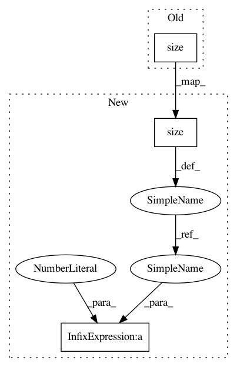

fc850582ced2b873507493a7a6eafd7bcc9a24e2,sru/sru_functional.py,tSRUCell,reset_parameters,#tSRUCell#,650
Before Change
self.weight.data.uniform_(-val_range, val_range)
w = self.weight.data.view(d, -1, self.n_out, 2)
if self.n_proj > 0:
val_range_2 = (3.0/self.weight_proj.size(0))**0.5
self.weight_proj.data.uniform_(-val_range_2, val_range_2)
// initialize bias
After Change
self.weight.data.uniform_(-val_range, val_range)
w = self.weight.data.view(d, -1, self.n_out, 2)
if self.n_proj > 0:
d_2 = self.weight_proj.size(0)
val_range_2 = (3.0/d_2)**0.5
self.weight_proj.data.uniform_(-val_range_2, val_range_2)
// initialize bias
In pattern: SUPERPATTERN
Frequency: 3
Non-data size: 3
Instances
Project Name: asappresearch/sru
Commit Name: fc850582ced2b873507493a7a6eafd7bcc9a24e2
Time: 2019-09-11
Author: taolei@csail.mit.edu
File Name: sru/sru_functional.py
Class Name: tSRUCell
Method Name: reset_parameters
Project Name: OpenNMT/OpenNMT-py
Commit Name: 031392ff2cbb5703558d17a676a456521f754190
Time: 2016-12-15
Author: soumith@fb.com
File Name: mnist/main.py
Class Name:
Method Name: train
Project Name: asappresearch/sru
Commit Name: 6acdbcfffa5674676dc88c94af3e555f3fa64d17
Time: 2019-10-22
Author: taolei@csail.mit.edu
File Name: sru/sru_functional.py
Class Name: tSRUCell
Method Name: reset_parameters